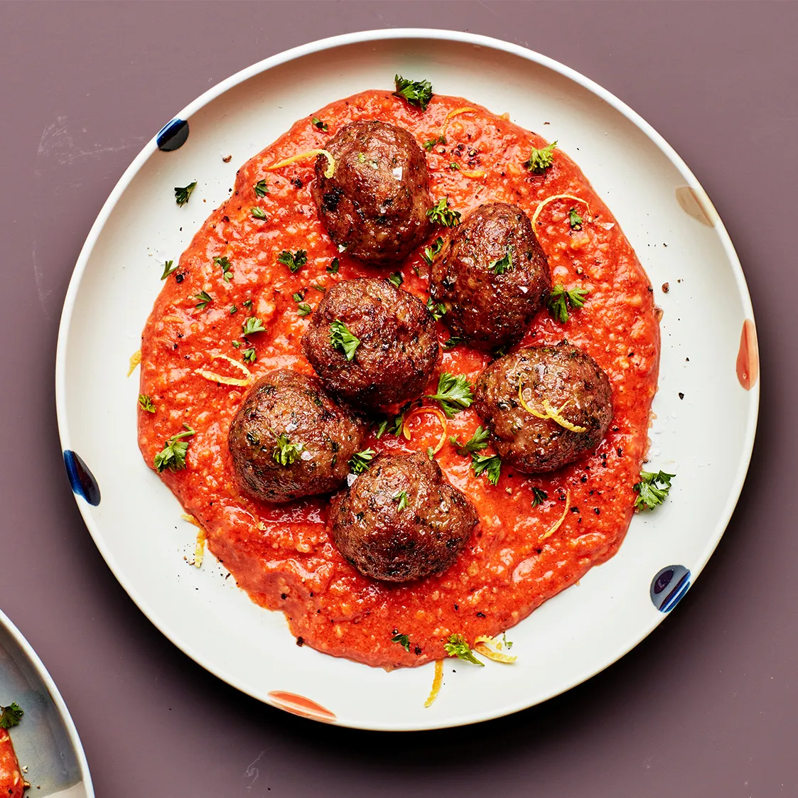

Mexican Meatballs

A plate of meatballs with red spicy sauce.
Description
What can ever beat the classic meatballs with red sauce? It is a staple of homecooking and comfort food known across the world.
However, what if I told you that you could have a spicy sauce that will not only break the monotony, but also probably become the meatball recipe you will love forever?
Enter mexican meatballs, by combining traditional chili peppers, some common spices and a good 'ol tomato sauce, you can change the way you experience a comfort classic and turn it into a more daring dinner.
Ingredients
- 700 gr of minced beef.
- 300 gr of minced pork.
- 1 egg.
- 40 gr of bread crumbs.
- 5 grams of oregano.
- 3 tomatoes.
- 2 green tomatoes.
- 2 cloves of garlic.
- 2 "ancho" peppers.
- 2 "guajillo" peppers.
- 1 "serrano" pepper.
- Half of an onion.
- Salt and pepper to taste.
- Vegetable oil.
Steps
- Mix the minced meat in a bowl along with your egg, the bread crumbs and the oregano, seasoning it with salt and pepper.
- With a pair of scissors, cut your "ancho" and "guajillo" peppers in half to remove the seeds and the veins (this will remove some of the spicyness).
- Cut the rest of the vegetables in half, put them along with your peppers in a pot with enough water to cover everything.
- Bring the pot to a boil and let it simmer for 5 minutes, or until the peppers soften.
- Pass the contents from the pot to a blender, add some of the water from the boil and grind it into a fine sauce.
- Start assembling your meatballs.
- Put a pot with oil on a medium fire. Once the oil is hot, pour in your sauce. Season to taste.
- Once your sauce is starting to boil, add your meatballs.
- Bring the pot to a simmer, cover with a lid, lower the flame and let cook for an hour, moving with a wooden spoon every 20 minutes to ensure the meatballs don't stick to the pan and burn.
- Serve on a plate and enjoy!